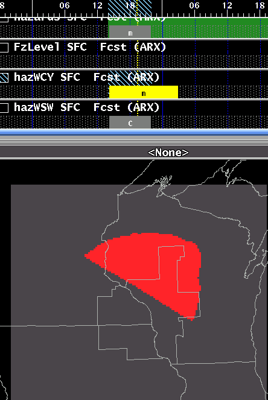
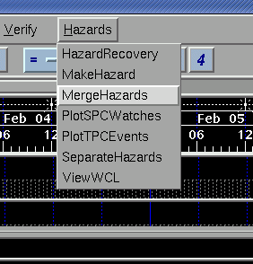
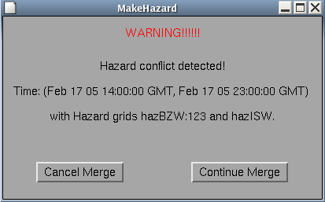

MergeHazards
A Procedure for Merging Separated Hazard Grids Together
The MergeHazards procedure is used to recombine temporary hazard
grids (created by SeparateHazards)
back
into the actual Hazards grid. In the example below, the Hazard grid has
been broken into two temporary
hazards:

To recombine these, select the menu Hazards, then MergeHazards.

This tool simply combines temporary hazards into
the Hazards grid of the forecast database and exits. To
completely remove an existing hazard, delete its grid while it is separated into a
temporary grid, the run MergeHazards.
Checking for
Invalid Combinations
There are certain hazard combinations that are considered
invalid. For example, BZ.W (BLIZZARD WARNING) and WS.W (WINTER
STORM WARNING) should never be combined at the same grid point since
they are both forecasts for the same type of hazard but of different
severity.
The MergeHazards tool includes the capability of checking for these
invalid combinations and notifying you when they occur. If an
invalid combination is detected by the tool, a dialog appears informing
you of the time period and hazard grids that are imporperly
combined. The dialog looks like this:

Note that the dialog informs you of the start time and the end time of
the overlap and the temporary weather elements that are in violation.
At this point you have two choices:
If you select Cancel
Merge, all of the grids will be left as they were before you
executed the MergeHazards tool. You then have a chance to adjust
the temporary hazards grids in space and/or time to remove the invalid
combination. If you successfully remove the invalid combination
and run the MergeHazards tool again, the grids will be properly merged
into the Hazards weather element.
If you select Continue Merge ,
the tool will merge the grids anyway, despite the invalid
combination. The tool is designed this way to avoid any
frustration you may encounter if you truly believe that these hazards
should be combined.
Note that you may define your hazard grids such that you have more than
one invalid combination. The MergeHazards tool displays the
warning dialog as soon as it detects the first invalid combination. If you
fix the first combination and attempt to merge again, the tool will
detect the next invalid combination. You may then cancel, adjust
your grids, and attempt to merge again. This interative process
will continue until no invalid combinations exist in your temporary
hazard grids.
Configuring Invalid
Combinations
The MergeHazards tool includes a rather large Python dictionary that
defines the invalid combinations for every VTEC code. Here is a
small snipet of this dictionary...
HazardsConflictDict
= {
"AF.Y" : [],
"AS.Y" : [],
"BS.Y" : ["BZ.A", "LE.A", "WS.A", "BZ.W", "HS.W",
"IS.W", "IP.W", "WS.W", "LE.W", "SN.Y",
"WW.Y", "LE.Y", "LB.Y", "ZR.Y"], ...
This small snipet of the dictionary defines the VTEC codes "AF.Y" and
"AS.Y" as having no invalid combinations. In other words, these
hazards may be combined with any other hazard. The "BS.Y" hazard,
on the other hand, may not be combined with 14 other winter
hazards. If you wish, your local office may choose to edit the
MergeHazards tool and modify this dictionary. However, we
strongly recommend that you restrict any editing to just this
dictionary. Any other modifications may result in the
MergeHazards tool malfunctioning.
How It Works
The MergeHazards procedure follows these steps:
- It first looks for any temporary weather elements that begin with
the letters "haz*"
which were created by the Separate Hazards or Make Hazard
procedures.
- It ensures that there are no conflicting locks on the Hazards
weather element.
- It checks to make sure there are no invalid hazard combinations.
- It removes all existing Hazard grids.
- It creates the merged set of Hazard grids.
- It deletes the set of temporary hazard grids.